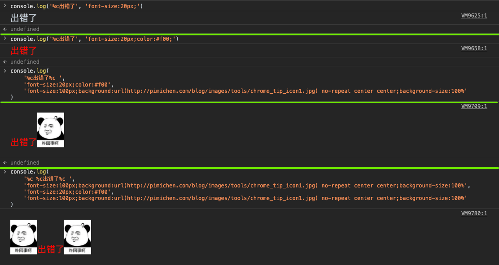
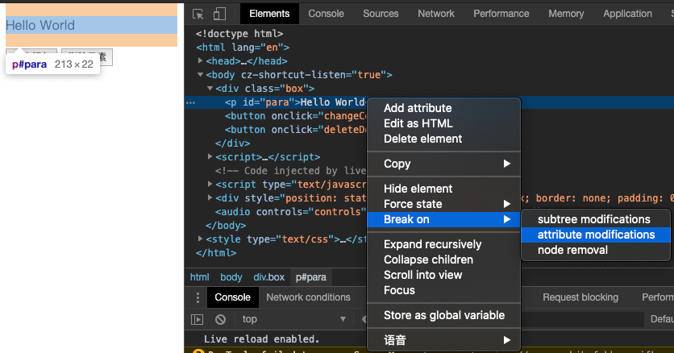
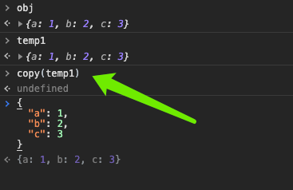
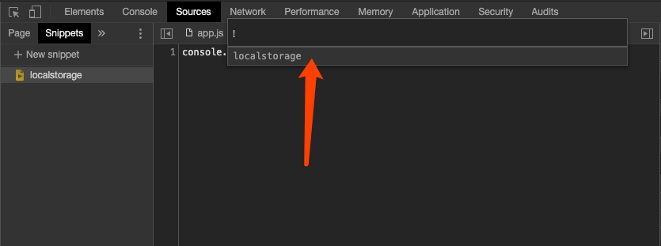
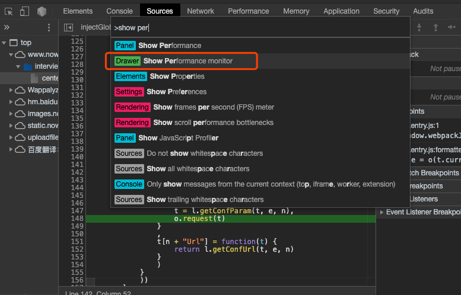

部分参考：西瓜视频>盆盆儿WEB前端>chrome调试小技巧合集
检查元素Dom hover状态
- 鼠标选中元素，找到Dom节点位置
- 右键选择
Force state，选择hover，就能看到hover状态的样式了，同理focus、active等
$0获取Dom元素
- 鼠标选中元素，找到Dom节点位置
- 控制台输入
$0即为当前的Dom元素，可进行相关的操作
console.log样式
第一个参数为需要打印的内容，使用
%c作为分隔符，第二个参数开始依次对应每个%c后面的内容的样式，如需插入图片，使用空格修饰，如：1
2
3
4
5
6
7
8
9
10
11
12
13
14
15
16console.log('%c出错了', 'font-size:20px;')
console.log('%c出错了', 'font-size:20px;color:#f00;')
console.log(
'%c出错了%c ',
'font-size:20px;color:#f00;',
'font-size:100px;background:url(***.jpg) no-repeat center center;background-size:100%;'
)
console.log(
'%c %c出错了%c ',
'font-size:100px;background:url(***.jpg) no-repeat center center;background-size:100%;',
'font-size:20px;color:#f00;',
'font-size:100px;background:url(***.jpg) no-repeat center center;background-size:100%;'
)
console.count打印调用次数
默认使用default来描述
1
for (let i = 0; i < 10; i++) { console.count(); }
也可以设定一个描述，如:
1
for (let i = 0; i < 10; i++) { console.count('count'); }
这样就能只管看出某个方法具体被调用了多少遍，注意次数和程序无关，只和console.count被调用多少次有关，即如果页面不刷新，继续执行，次数会累加。
console.error和console.warn
console.error输出错误日志，红色显示console.warn输出警告日志，黄色显示1
2console.error('a error message!');
console.warn('a warn message!');
console.time和console.timeEnd组合
- 先输出
console.time() 在输出
console.timeEnd()，输出的时间即为中间语句的执行时间1
2
3
4console.time()
setTimeout(() => {
console.timeEnd()
}, 2000)注意：setTimeout只是表示延迟执行，具体间隔时间与语句的执行时间也有关系，并非严格意义上的2s。
console.clear清空log
- 使用
console.clear()可以清空所有的log
console.group或groupCollapsed输出分组信息
console.group()输出分组信息，以groupEnd结尾，默认展开。console.groupCollapsed()同group，默认折叠。1
2
3
4console.group('开始log')
console.log('1')
console.log('2')
console.groupEnd()
console.table表格信息
console.table()方法用于在控制台输出表格信息。- 第一个参数是必需的，且对象类型需要是对象或数组，对应的数据会填充到表格中。
第二个参数可选，可指定需要输出的表头名，默认全部输出。
打印数组：
1
console.table(["Google", "Runoob", "Taobao"]);
打印对象：
1
console.table({ name : "菜鸟教程", site : "www.runoob.com" });
打印对象数组：
1
2
3
4var site1 = { name : "Runoob", site : "www.runoob.com" }
var site2 = { name : "Google", site : "www.google.com" }
var site3 = { name : "Taobao", site : "www.taobao.com" }
console.table([site1, site2, site3]);第二个参数可指定需要输出的表头名，默认全部输出
1
2
3
4
5
6
7var site1 = { name : "Runoob", site : "www.runoob.com" }
var site2 = { name : "Google", site : "www.google.com" }
var site3 = { name : "Taobao", site : "www.taobao.com" }
console.table([site1, site2, site3], ["name"]);
console.table([site1, site2, site3], ["site"]);
console.table([site1, site2, site3], ["name", "site"]);
Dom断点调试
比如页面有一个p标签和两个按钮，一个按钮的功能为修改p段落样式，一个按钮的功能为删除p段落，通过在Dom上添加断点来定位到相应的js代码。
- 鼠标选中元素，找到Dom节点位置
- 右键选择
Break on，选择attributes modifications
 - 当我们点击按钮的时候，会自动帮我们定位到js中的代码位置断点
同理，选择node removal，既可以在元素删除的时候断点
Dom绑定事件断点调试
上一个方法我们介绍了如何给Dom断点调试，但是该方法仅支持调试属性修改和节点删除事件。下面我们介绍如何给Dom绑定的时候进行断点，差点执行流程。
- 鼠标选中元素，在
Elements一栏打开Event Listeners - 知道绑定的方法，以
click方法为例，展开该方法 - 找到引用的js文件并打开
- 这样就找到了该Dom元素对应的click方法
- 然后我们就可以设置相应的断点，进行单步调试了
错误断点调试
当我们的js遇到错误的时候，有的时候我们可以通过错误信息后面的js来定位到错误的地方。下面介绍一下另外一种方法：
- 打开开发者工具，切换到source面板
- 点击
Pause on exceptions，勾选Pause on caught exceptions - 刷新页面，这个时候页面会自动在发生错误的位置增加断点
控制台代码手动添加debug
- 比如我们需要在控制台测试我们编写的某一段代码，且需要在代码执行的时候添加debug断点，除了手动在代码中添加debugger外，还可以这样：
也可以用于给当前页面的全局方法添加断点
1
2
3
4
5
6function test() {
console.log('I need debug!');
}
debug(test)
test()
控制台拷贝对象
- 在打印的对象上右键，找到
Store as global variable，此时会自动输出一个temp1的全局变量，手动执行copy(temp1)就可以复制到剪切板了。

控制台$符号
在chrome中，除了使用
document.getElementById系列方法或document.querySelector系列方法外，还可以使用$来选择元素，注意此$并不等同于jQuery中的$。假设有个这样的结构：
1
2
3<p id="para">Hello World</p>
<button onclick="changeColor()">修改颜色</button>
<button onclick="deleteDom()">删除元素</button>通过$也可以选择p和button
1
2
3
4
5
6
7$('p') // <p id="para">Hello World</p>
$('button') // <button onclick="changeColor()">修改颜色</button>
// $ 方法的效果相当于 document.querySelector()，获取单个元素，如果存在多个，返回第一个元素
$$('p') // [p]
$$('button') // [button, button]
// $$ 方法的效果相当于 document.querySelectorAll()，获取多个元素，返回数组
调试nodejs程序
通常我们在执行node程序的时候，会这样操作，这样的话我们只能使用命令行工具来进行debug：
1
node app.js
我们也可以这样启动命令：
1
node --inspect-brk app.js
启动完成之后，我们使用chrome打开任意一个页面，打开开发者工具，开发者工具会自动多出一个测试node的工具，点击这个就可以在chrome中debug了。
chrome充当编辑器
- 打开开发者工具，切换到source面板
- 选择
Filesystem，如果看不见，点击后面的箭头展开，点击Add floder to workspace选择本地磁盘的文件夹 - 然后就可以在chrome上操作文件了，保存的时候会自动同步到本地磁盘
- 如果是html文件，可以右键
Copy link address到地址栏打开
保存代码片段
我们可以在chrome中保存一些常用的代码片段，来减少我们重复性的输入
- 打开开发者工具，切换到source面板
- 选择
Snippets，如果看不见，点击后面的箭头展开，点击New Snippet添加自己的代码片段 - 假设我们添加一个名为localstorage的代码片段，如：
- 快捷键
command + p，在搜索框中输入！，会列出所有的代码片段，选择相应的执行即可
 - 这个时候就会在控制台执行相应的代码，如
动画检查器
假设我们实现了一个动画的效果，代码如下：
1
2
3
4
5
6
7
8
9
10
11
12
13
14
15
16
17
18
19
20
21
22
23
24
25
26
27
28
29
30
31
32
33
34
35
36
37
38
39
40
41
42
43
44
45
46
47
48
49
50
51
52
53
54
55
<html lang="en">
<head>
<meta charset="UTF-8">
<title>Document</title>
<style>
*{
margin: 0;
padding: 0;
}
.run{
width: 100px;
height: 100px;
background-color: #ccc;
display: flex;
justify-content: center;
align-items: center;
}
.run.ani{
animation: runAni 1s linear infinite;
}
@keyframes runAni {
0% {
transform: translate(0, 0);
}
50% {
transform: translate(300px, 0);
}
100% {
transform: translate(0px, 0);
}
}
.btn{
width: 50px;
height: 30px;
border: 1px solid #ccc;
display: flex;
justify-content: center;
align-items: center;
margin-top: 50px;
cursor: pointer;
}
</style>
</head>
<body>
<div class="run">running</div>
<div class="btn" onclick="startRun()">开始</div>
<script>
var box = document.querySelector('.run')
function startRun() {
box.classList.add('ani');
}
</script>
</body>
</html>
当PM过来验收的时候觉得动画时间不太满意，这个时候我们可能需要不停的修改代码，让PM去看哪个时间比较OK。相对来说会比较烦，我们可以通过chrome字自带的动画检查器来控制动画。
流程如下：
- 打开开发者工具
- 快捷键
command + shift + p(或command + p，再输入>)，输入Show Animations - 会多出一个窗口显示Animation，运行动画（按钮触发或刷新页面）会抓取到动画，点击查看详细动画
- 每一个线段即为一个动画周期，节点即为keyframes的节点
- 这个时候就可以让PM自己来拖动，选择合适的动画时间了
性能监控
- 打开开发者工具
- 快捷键
command + shift + p(或command + p，再输入>)，输入Show Performace Monitor
 - 会多出一个窗口显示网页性能Performace
- 通过分析这些指标来了解网页的性能